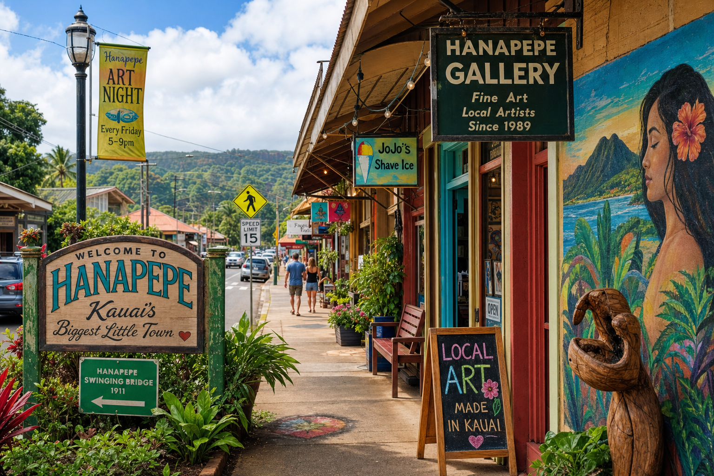

Hanapepe sits on Kauai's south shore, tucked between the red dirt cane fields and the blue Pacific. To drive through it casually is to see a small, quiet town of wooden storefronts, many of them a century old. But to stop and explore is to discover one of Hawaii's most unique and vibrant cultural communities — and to understand why this little town has become known as "Kauai's biggest little town."
Plantation Roots
Hanapepe was established as a sugar plantation town in the late 19th century. At its peak, the surrounding valley supported thousands of acres of sugarcane and a diverse community of Japanese, Filipino, Portuguese, Chinese, and Hawaiian workers. The wooden storefronts that line Hanapepe Road today are largely original plantation-era buildings — many over 100 years old — and their architectural character is preserved by historic district protections.
The 1924 Massacre
Hanapepe holds a dark but important place in Hawaiian labor history. On September 9, 1924, Filipino plantation workers who had been on strike were killed by police during a clash that became known as the Hanapepe Massacre. It was one of the bloodiest labor confrontations in Hawaii's history and is commemorated with a memorial in the town. Understanding this history is part of understanding Hanapepe's resilient, proud spirit.
The Art Community Takes Root
Beginning in the 1990s, Hanapepe began attracting artists and creative entrepreneurs drawn by the affordable historic buildings and the town's unique character. Galleries opened, then studios, then cafes. The Hanapepe Art Walk — held every Friday evening — began in 1997 and has grown into one of Hawaii's most beloved community events, bringing together locals, visitors, artists, and merchants every week.
Second Wave's Place in the Story
Second Wave Thrift opened in 2017, becoming part of the creative ecosystem that makes Hanapepe special. Our location on Hanapepe Road places us in the heart of the arts district, and we see ourselves as curators of material culture — preserving the physical objects that tell the story of island life across generations. When a visitor finds a 1960s Hawaii travel poster in our shop, they're holding a piece of history.